第二节 准备工作¶
本节环境配置方面主推两种基于浏览器的集成开发环境。不管是手机、平板还是电脑，随时都可以上号运行代码。虽然手机平板可能体验不佳，但胜在能用。
一、大模型 API 配置¶
1.1 AIHubmix API 申请¶
AIHubmix 是一个美国平台，公司注册在美国的特拉华州，一站式聚合了全球主流的 AI 模型，最新的模型通常能在发布当天最晚不超过 1 周就会支持。完全对接相关模型的云厂商（OpenAI 对接的是 Azure 云，Gemini 对接的 Google 官方，Claude 对接的是 AWS，其他开源等模型是对接到各大知名云厂商或者推理公司）。AIHubmix 的服务器是在美国谷歌云上采用集群部署，同时因为完全对接云厂商，所以稳定性非常好，有多端点路由机制，可以达到比直连官方更稳定的效果。
AIHubmix 提供的免费模型足够我们完成项目的学习。
-
访问 AIHubmix 平台
打开浏览器，访问 AIHubmix。
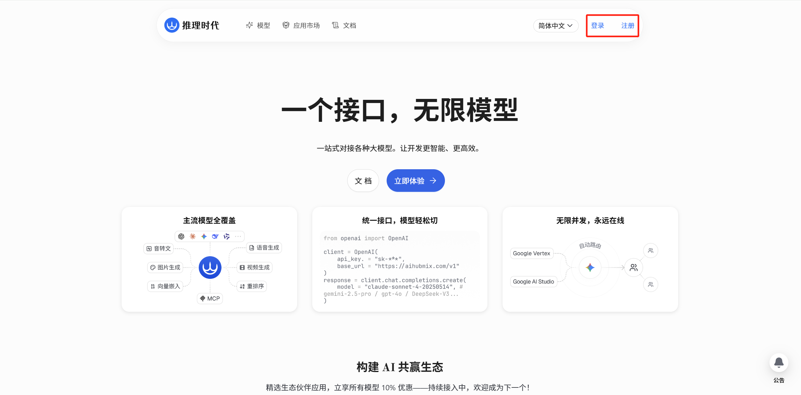
-
登录或注册账号
如果已有账号，可以直接登录。如果没有，请点击页面右上角的注册按钮，使用邮箱或手机号完成注册。
-
模型筛选
注册完成后，来到模型页面。标签选择
免费，可以看到官方提供了一定数量的免费模型。而且 AIHubmix 还提供了很多嵌入和重排序的国内外模型选择，这些在 RAG 领域都很常用。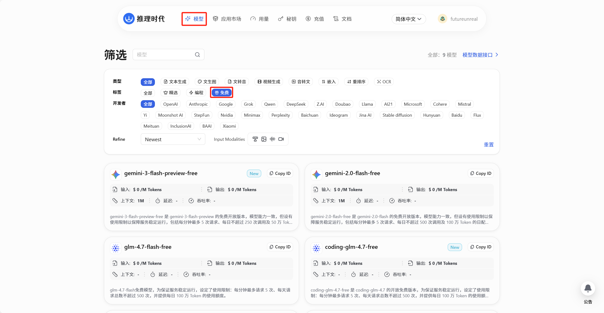
-
管理 API 密钥
接着进入密钥管理页面，如下图所示，默认已经有了一个密钥可以直接复制使用。当然也可以点击
创建 Key填写名称后重新创建一个。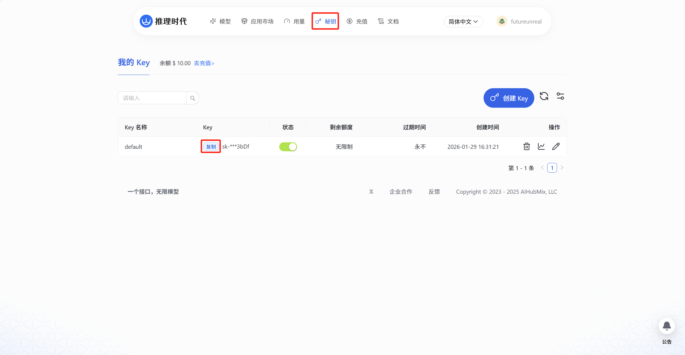
1.2 DeepSeek API 申请¶
要使用 Deepseek 提供的大语言模型服务，你首先需要一个 API Key。下面是申请步骤：
-
访问 Deepseek 开放平台
打开浏览器，访问 Deepseek 开放平台。
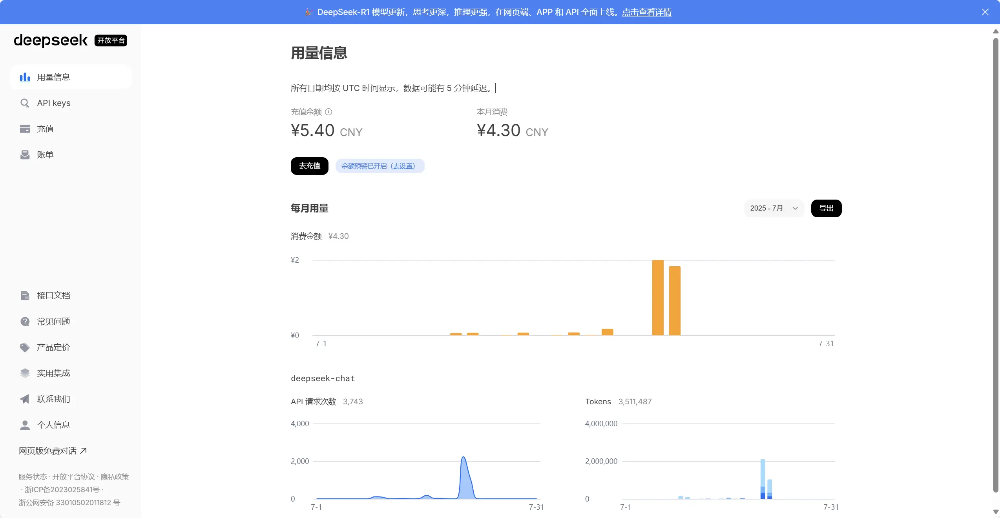
-
登录或注册账号
如果你已有账号，请直接登录。如果没有，请点击页面上的注册按钮，使用邮箱或手机号完成注册。
-
创建新的 API 密钥
登录成功后，在页面左侧的导航栏中找到并点击
API Keys。在 API 管理页面，点击创建 API key按钮。输入一个跟其他api key不重复的名称后点击创建。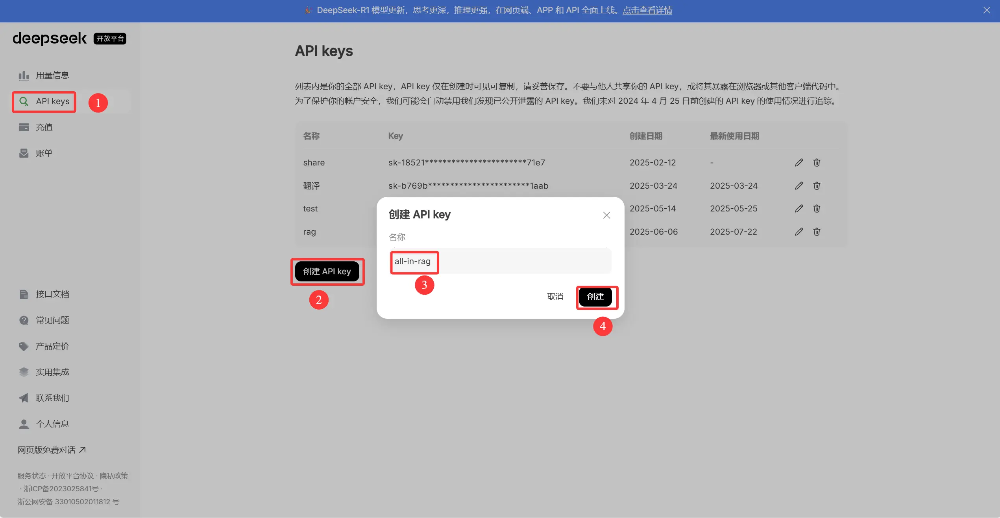
-
保存 API Key
系统会为你生成一个新的 API 密钥。请立即复制并将其保存在一个安全的地方。
注意：出于安全原因，这个密钥只会完整显示一次，关闭弹窗后就没法再看到了。
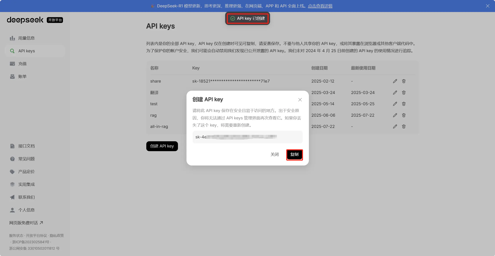
二、GitHub Codespaces 环境配置（推荐）¶
首先确定是否具有可以流畅访问 GitHub 的网络环境，若无法流畅访问请使用下面的Cloud Studio
GitHub Codespaces 是 GitHub 提供的一项服务，允许开发者在云端创建、编辑和运行代码。它提供了一个预配置的开发环境，包括代码编辑器、终端、调试工具等，可以直接在浏览器中使用。
2.1 创建Codespaces¶
-
访问项目地址
打开浏览器，访问 all-in-rag
-
创建新分支 在项目页面的右上角，点击
Fork按钮，创建一个新的分支。稍等一会儿即可创建成功。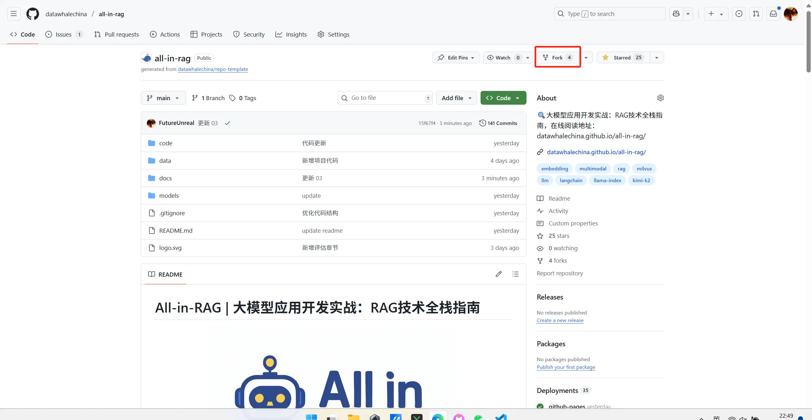
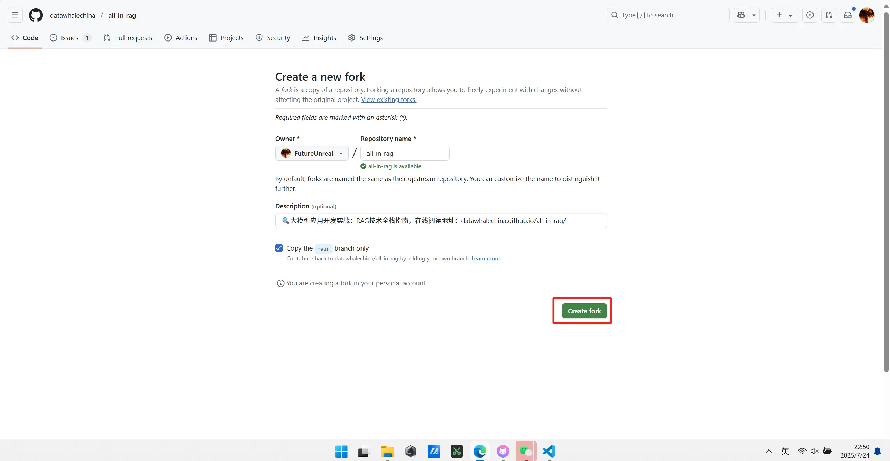
-
创建Codespaces 在项目页面的右上角，点击
Code按钮，然后选择Codespaces选项卡。点击New codespace按钮，等待新的 Codespaces 环境创建成功。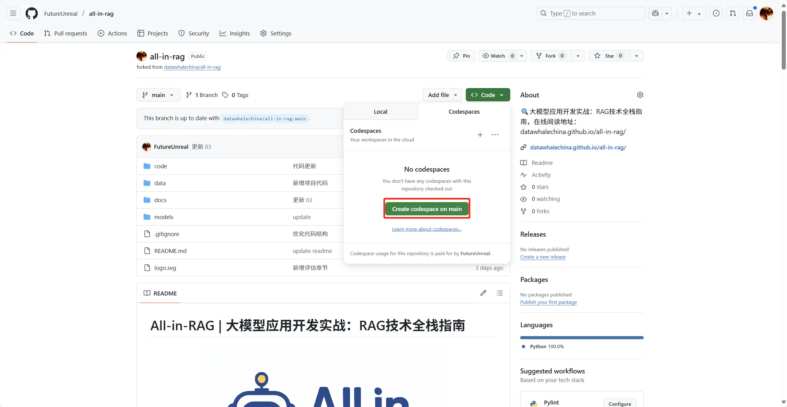
-
再次进入Codespaces 网页关闭后，找到刚才新建的存储库，点击红框框选内容即可重新进入 codespace 环境。
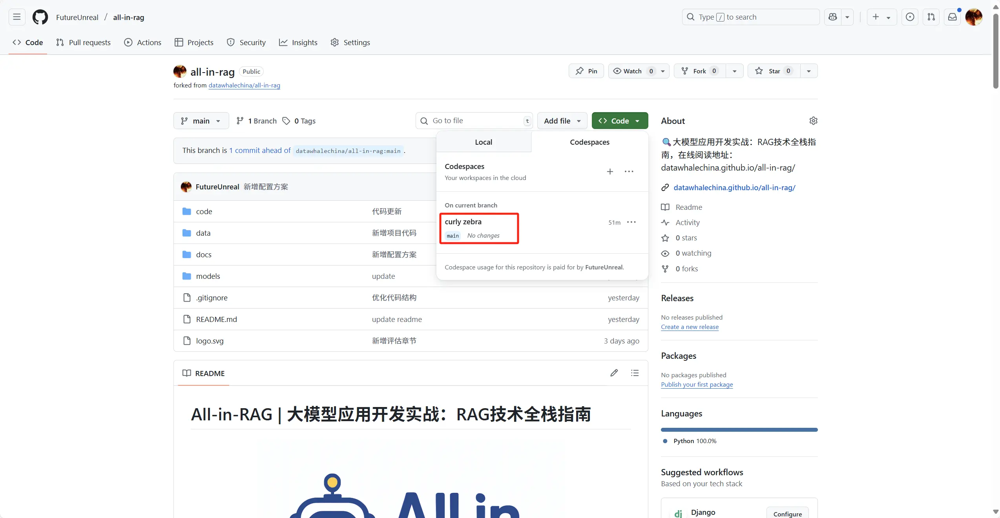
-
额度设置 找到 GitHub 的账户设置中的 codespace 设置，挂起时间建议根据自己情况调整（时间过长会浪费额度，免费账号提供了单核120小时的额度）
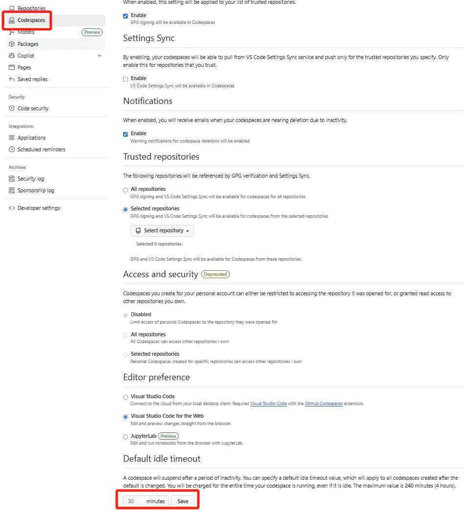
2.2 python环境配置¶
进入 IDE 后先选择下方终端
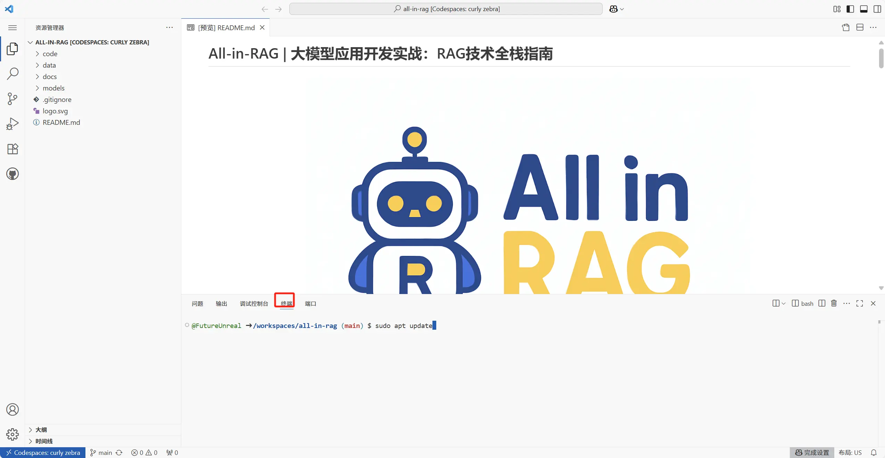
-
更新系统软件包
在终端输入下面指令：
-
安装Miniconda
wget https://repo.anaconda.com/miniconda/Miniconda3-latest-Linux-x86_64.sh -O ~/miniconda.sh bash ~/miniconda.sh- 按 Enter 阅读许可协议
- 输入
yes同意协议 - 安装路径提示时直接按 Enter（使用默认路径 /home/ubuntu/miniconda3）
- 是否初始化Miniconda：输入
yes将Miniconda添加到您的PATH环境变量中。
如果显示版本号，说明安装成功。
2.3 API配置¶
-
使用
vim编辑器打开你的 shell 配置文件。 -
输入
i进入编辑模式，在文件末尾添加以下行，将[你的大模型 API 密钥]替换为你自己的密钥：如果选择的是
AIHubmix平台，为了增加辨识度也可以使用：不要带
[] -
保存并退出 在 vim 中，按 Esc 键进入命令模式，然后输入
:wq并按 Enter 键保存文件并退出。 -
使配置生效 执行以下命令来立即加载更新后的配置，让环境变量生效：
2.4 创建并激活虚拟环境¶
-
创建虚拟环境
出现选项直接回车即可。
-
激活虚拟环境
使用以下命令激活虚拟环境：
-
依赖安装 如果严格安装上述流程当前应该在项目根目录，进入code目录安装依赖库
如果出现关于grpcio的版本错误无需在意。
三、Cloud Studio 环境配置（国内环境推荐）¶
Cloud Studio 是腾讯云推出的一款基于浏览器的集成开发环境（IDE）。支持CPU与GPU的访问。
听说一个月是50个小时的免费额度🤔
3.1 应用创建¶
-
访问 Cloud Studio 打开浏览器，访问 Cloud Studio。
-
登录或注册账号 点击页面右上角的
注册登录按钮，使用微信等方式完成登录。 -
创建应用 在页面上方的导航栏中找到并点击
创建应用。选择从 Git 仓库导入，在项目地址栏输入https://github.com/datawhalechina/all-in-rag.git后回车，将会自动为你创建标题和描述。注意描述中不要包含网址
-
再次进入 后续在应用管理页面找到之前创建的应用，点击后选择右上角编写代码即可再次进入。
3.2 python环境配置¶
进入 IDE 后先选择右侧终端
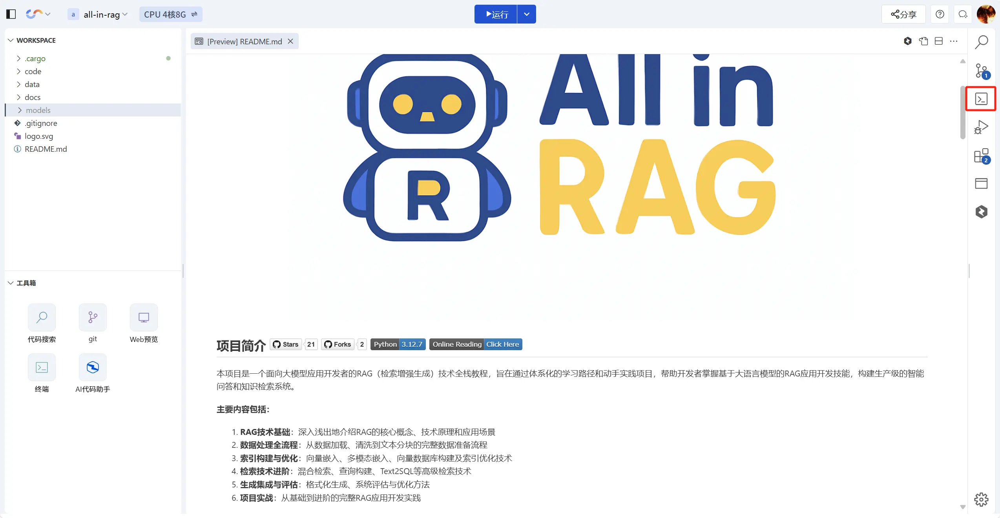
-
更新系统软件包
在终端输入下面指令：
-
切换普通用户
-
安装Miniconda
wget https://repo.anaconda.com/miniconda/Miniconda3-latest-Linux-x86_64.sh -O ~/miniconda.sh bash ~/miniconda.sh- 按 Enter 阅读许可协议
- 输入
yes同意协议 - 安装路径提示时直接按 Enter（使用默认路径 /home/ubuntu/miniconda3）
- 是否初始化Miniconda：输入
yes将Miniconda添加到您的PATH环境变量中。
如果显示版本号，说明安装成功。
3.3 API配置¶
-
使用
vim编辑器打开你的 shell 配置文件。 -
输入
i进入编辑模式，在文件末尾添加以下行，将[你的大模型 API 密钥]替换为你自己的密钥：如果选择的是
AIHubmix平台，为了增加辨识度也可以使用：不要带
[] -
保存并退出 在 vim 中，按 Esc 键进入命令模式，然后输入
:wq并按 Enter 键保存文件并退出。 -
使配置生效 执行以下命令来立即加载更新后的配置，让环境变量生效：
3.4 创建并激活虚拟环境¶
-
创建虚拟环境
出现选项直接回车即可。
-
配置文件权限
-
激活虚拟环境
使用以下命令激活虚拟环境：
-
依赖安装 如果严格安装上述流程当前应该在项目根目录，进入code目录安装依赖库
如果出现关于grpcio的版本错误无需在意。
四、windows环境配置（使用Cloud Studio 或 Codespaces 可跳过此步骤）¶
4.1 API配置¶
-
右键点击 “计算机” 或 “此电脑”，然后点击 “属性”。
-
在左侧菜单中，点击 “高级系统设置”。
-
在 “系统属性” 对话框中，点击 “高级” 选项卡，然后点击下方的 “环境变量” 按钮。
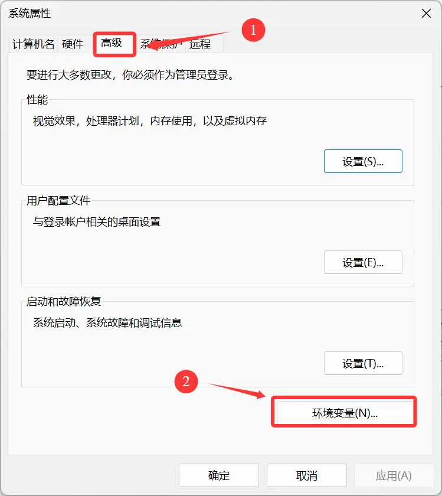
-
在 “环境变量” 对话框中，点击 “新建”（在 “用户变量” 部分下），然后输入以下信息：
- 变量名：DEEPSEEK_API_KEY
- 变量值：[你的 Deepseek API 密钥]
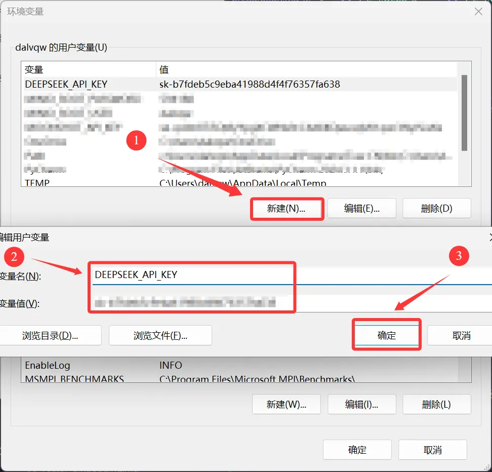
4.2 安装Miniconda¶
-
下载安装程序
优先推荐访问清华大学开源软件镜像站，以获得更快的下载速度。根据你的系统选择最新的
.exe版本下载。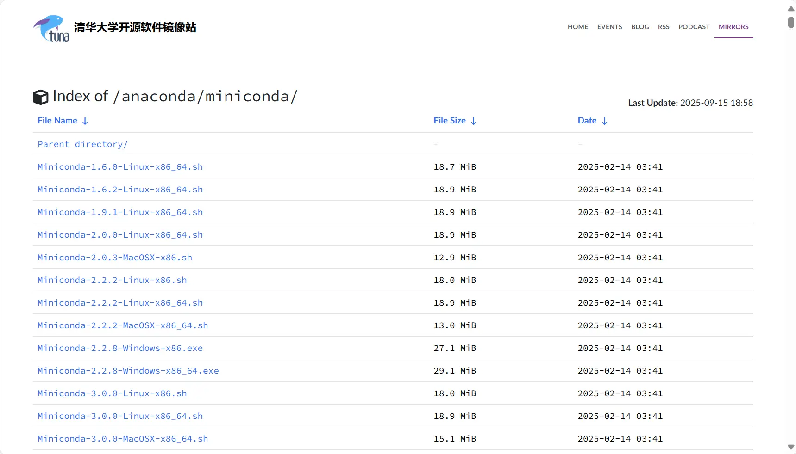
你也可以从 Miniconda 官方网站下载。
-
运行安装向导
下载完成后，双击
.exe文件启动安装。按照向导提示操作：-
Welcome: 点击
Next。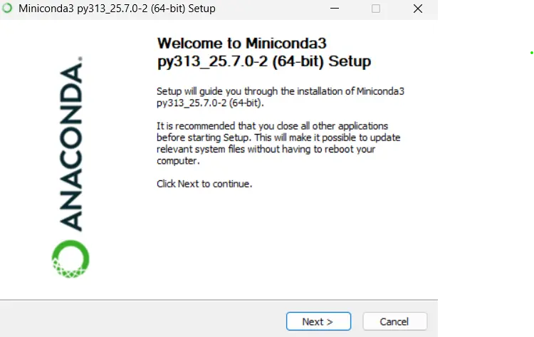
-
License Agreement: 点击
I Agree。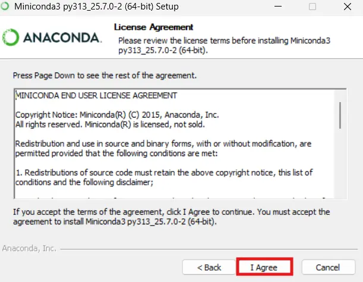
-
Installation Type: 选择
Just Me，点击Next。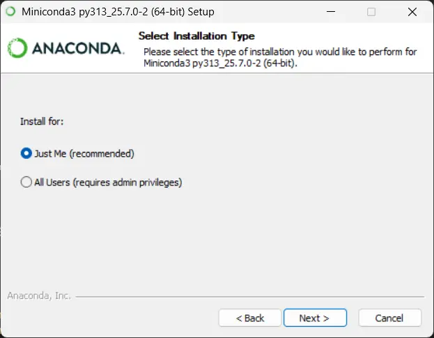
-
Choose Install Location: 建议保持默认路径，或选择一个不含中文和空格的路径。点击
Next。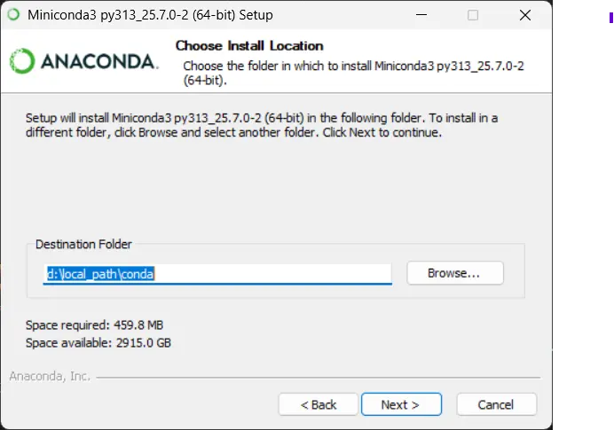
-
Advanced Installation Options: 请不要勾选 “Add Miniconda3 to my PATH environment variable”。我们将稍后手动配置环境变量。点击
Install。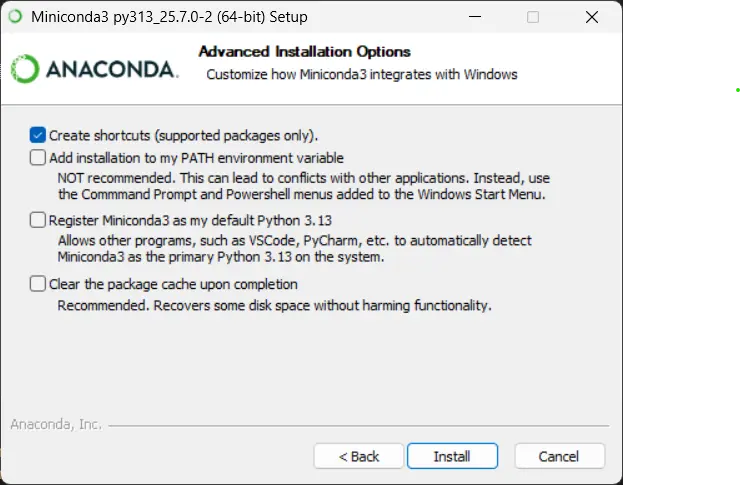
-
Installation Complete: 安装完成后，点击
Next，然后取消勾选 “Learn more” 并点击Finish完成安装。
-
-
手动配置环境变量
为了能在任意终端窗口使用
conda命令，需要手动配置环境变量。-
在Windows搜索栏中搜索“编辑系统环境变量”并打开。
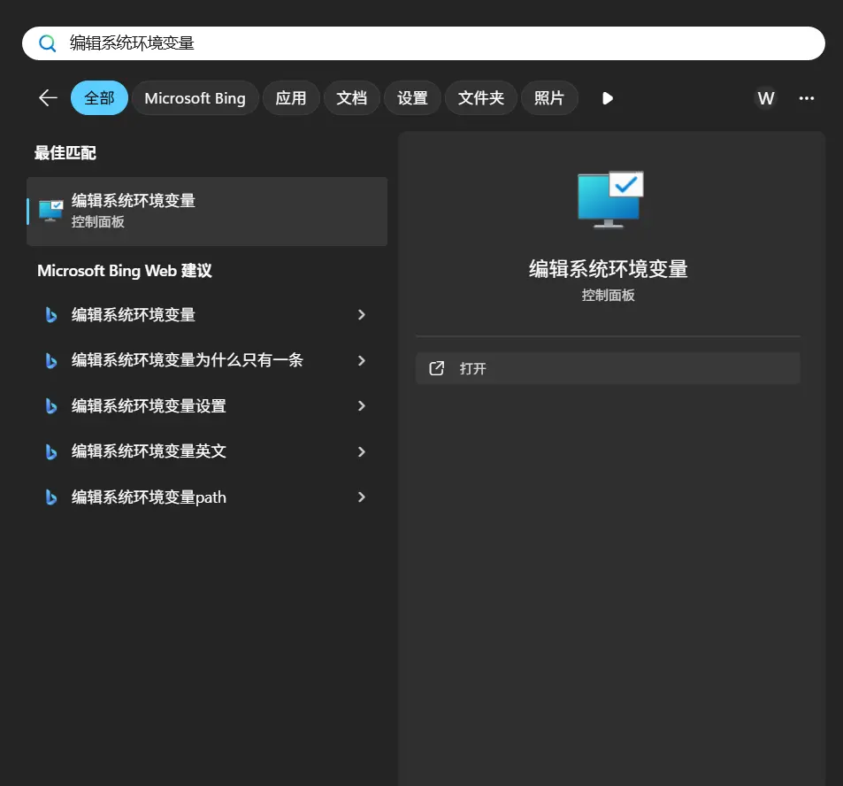
-
在“系统属性”窗口中，点击“环境变量”。
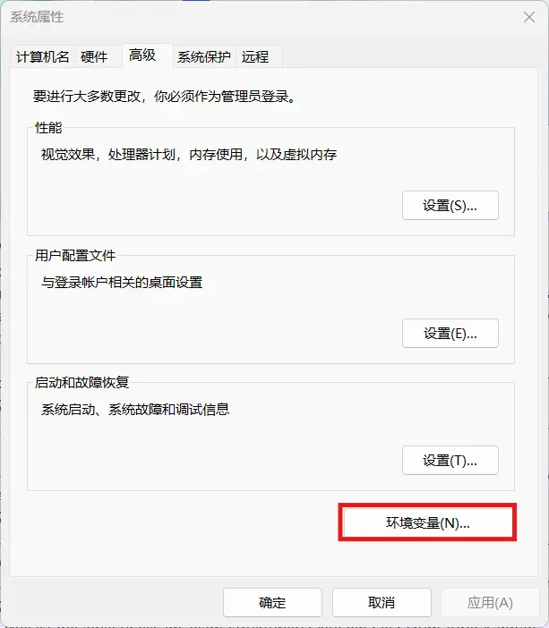
-
在“环境变量”窗口中，找到“系统变量”下的
Path变量，选中并点击“编辑”。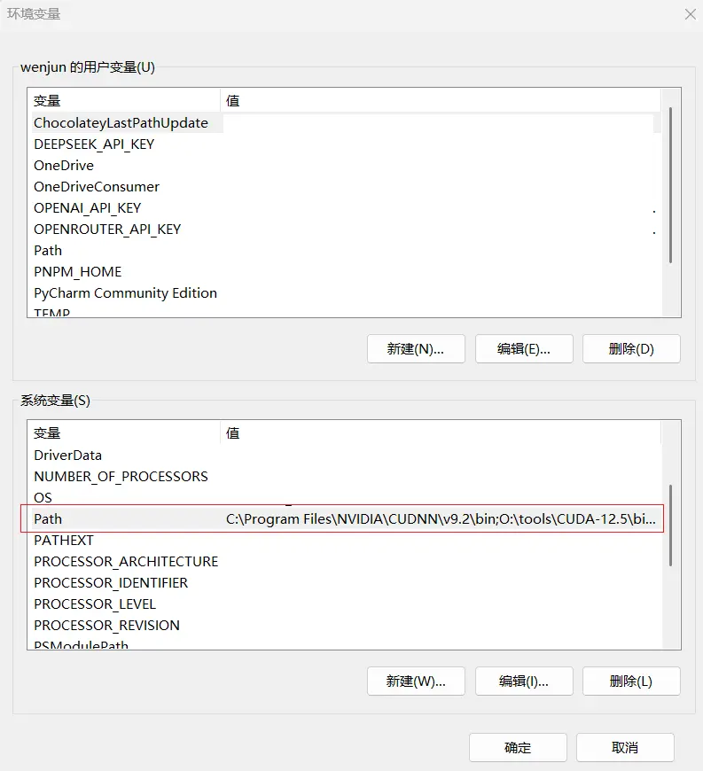
-
在“编辑环境变量”窗口中，新建三个路径，将它们指向你 Miniconda 的安装目录下的相应文件夹。如果你的安装路径是
D:\Miniconda3，则需要添加：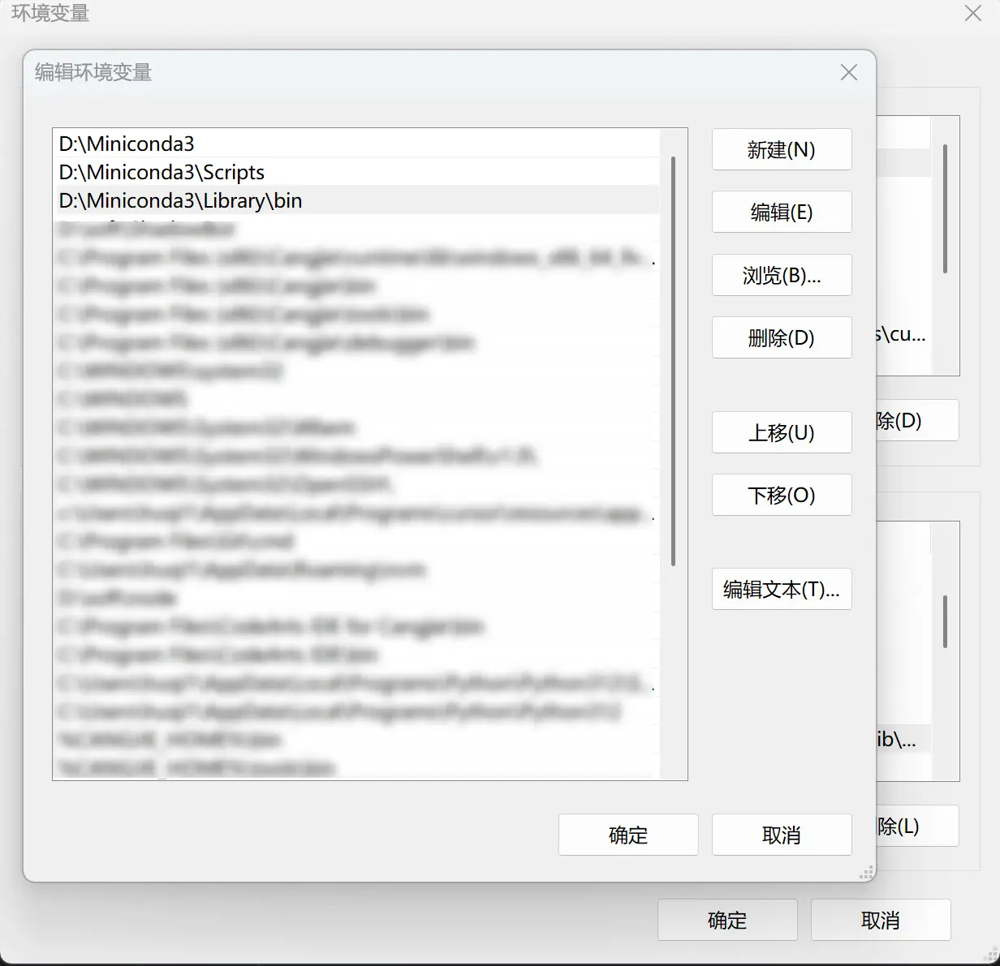
-
完成后，一路点击“确定”保存更改。
-
4.3 配置 Conda 镜像源¶
为了加快后续使用 conda 安装包的速度，强烈建议配置国内镜像源。打开一个新的终端或 Anaconda Prompt，运行以下命令：
conda config --add channels https://mirrors.tuna.tsinghua.edu.cn/anaconda/pkgs/main/
conda config --add channels https://mirrors.tuna.tsinghua.edu.cn/anaconda/pkgs/free/
conda config --set show_channel_urls yes
配置完成后，可以通过 conda config --show channels 命令查看已添加的源。
五、项目代码拉取（使用Cloud Studio 或 Codespaces 可跳过此步骤）¶
5.1 安装 Git¶
如果你尚未安装 Git，请按照以下步骤安装。
- Windows 系统：访问Git 官方网站，下载并运行安装程序，按照默认设置完成安装。
- macOS 系统：打开终端，输入以下命令安装 Git：
安装完成后，验证 Git 是否安装成功，输入以下命令：
如果成功，会显示 Git 的版本号。
5.2 克隆项目代码¶
- 选择存放项目的目录 打开终端（或 Windows 中的 Git Bash），导航到你想存放项目的目录：
- 克隆仓库
使用以下命令拉取
all-in-rag仓库：
等待下载完成，项目代码将存放在当前目录下的 all-in-rag 文件夹中。
- 进入项目目录 拉取代码后，进入项目目录：
5.3 创建并激活虚拟环境¶
在项目目录下，推荐使用前面配置好的 Miniconda 来创建 Python 虚拟环境。
- 创建虚拟环境
- 激活虚拟环境
所有系统统一使用以下命令激活虚拟环境：
-
依赖安装 如果严格安装上述流程当前应该在项目根目录，进入code目录安装依赖库